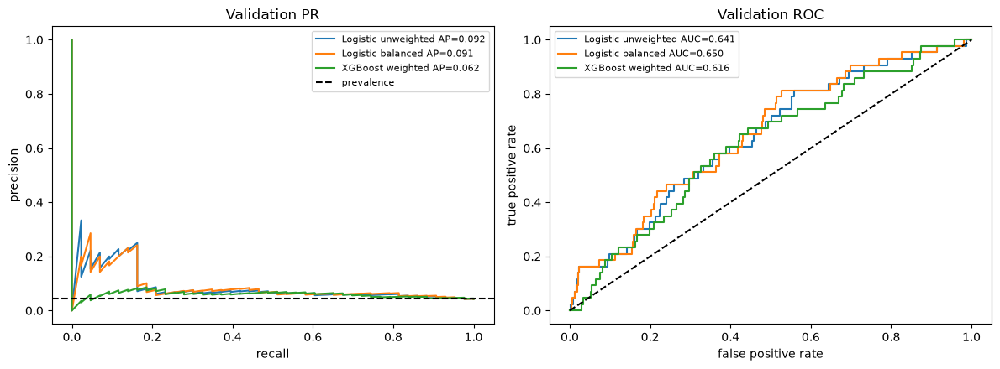
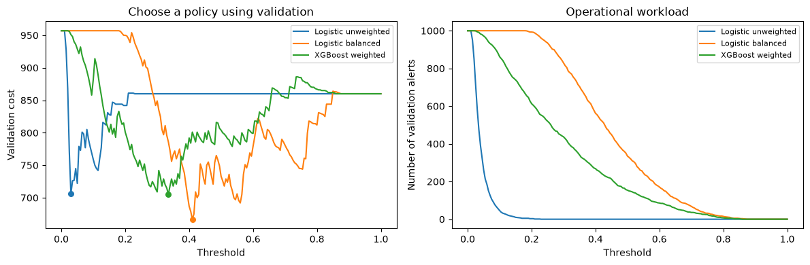

Lección 04 — Aprendizaje con clases desbalanceadas: eventos raros y decisiones
Un ejemplo sintético de transacciones separa el ordenamiento, la escala de probabilidad y la política del umbral.

Conteos calculados con el conjunto completo de datos de fraude proporcionado, antes de dividirlo. La cantidad de casos de la clase minoritaria explica por qué la exactitud no basta.
Lea los conteos antes de consultar una métrica
Suponga que un detector tiene una exhaustividad (TPR) del 80 % y una tasa de falsos positivos del 1 %. Entre 10 000 transacciones con un 1 % de fraude, se esperan 80 alertas verdaderas y 99 falsas: la precisión es de alrededor del 45 %. Con un 0,1 % de fraude, se esperan 8 alertas verdaderas y unas 100 falsas: la precisión es de alrededor del 7 %. Esto supone que el comportamiento condicional del detector es el mismo en ambas prevalencias; al cambiar la población, esas tasas también pueden variar.
Una regla que siempre predice la clase negativa puede alcanzar una exactitud alta y, aun así, pasar por alto todos los fraudes. Su costo es number_of_frauds * cost_per_missed_fraud, aunque no genere ninguna alerta. Compare este costo con el de la política elegida, no solo con la exactitud. Un umbral es una regla de acción que se elige con las filas de validación; ponderar una clase modifica el objetivo de ajuste y puede cambiar la interpretación de las probabilidades sin procesar.
1. Por qué la exactitud puede inducir a error
Con prevalencia positiva $\pi$, la regla que siempre predice la clase negativa tiene exactitud $1-\pi$ y exhaustividad cero. Con una prevalencia del 3 %, alcanza un 97 % de exactitud sin detectar ningún caso. Informe los conteos de cada clase y los tipos de error. Con el umbral $t$, prediga $\hat y=\mathbf1[p\ge t]$; la precisión es $TP/(TP+FP)$ y la exhaustividad es $TP/(TP+FN)$. Al variar $t$, se intercambian falsas alarmas y casos no detectados.
from pathlib import Path
import numpy as np
import pandas as pd
import matplotlib.pyplot as plt
from sklearn.model_selection import train_test_split
from sklearn.preprocessing import StandardScaler
from sklearn.pipeline import make_pipeline
from sklearn.linear_model import LogisticRegression
from sklearn.metrics import (
average_precision_score,
precision_recall_curve,
auc,
roc_auc_score,
confusion_matrix,
precision_score,
recall_score,
brier_score_loss,
)
from xgboost import XGBClassifier
def repo_root(start=Path.cwd()):
for path in (start, *start.parents):
if (path / "data" / "fraud.csv").exists():
return path
raise FileNotFoundError("Could not find data/fraud.csv")
ROOT = repo_root()
data = pd.read_csv(ROOT / "data" / "fraud.csv")
features = [
"amount",
"hour",
"card_present",
"international",
"account_age_days",
"transactions_24h",
"merchant_risk",
]
X, y = data[features], data["fraud"].astype(int)
print(f"rows={len(data)}, positives={y.sum()}, prevalence={y.mean():.3%}")
# Split first. The test rows remain untouched until all choices are frozen.
X_dev, X_test, y_dev, y_test = train_test_split(
X, y, test_size=0.20, random_state=14, stratify=y
)
X_train, X_valid, y_train, y_valid = train_test_split(
X_dev, y_dev, test_size=0.25, random_state=15, stratify=y_dev
)
print("sizes:", len(X_train), len(X_valid), len(X_test))
def empirical_cost(actual, scores, threshold, c_fn=20.0, c_fp=1.0):
predicted = scores >= threshold
false_negative = np.sum((actual.to_numpy() == 1) & ~predicted)
false_positive = np.sum((actual.to_numpy() == 0) & predicted)
return c_fn * false_negative + c_fp * false_positive
1. Por qué la exactitud puede inducir a error · salida calculada
rows=5000, positives=217, prevalence=4.340% sizes: 3000 1000 1000
2. Riesgo logístico y ponderación de clases
Para $p=\sigma(\eta)$ y $\eta=x^T\beta$, la log-verosimilitud negativa de Bernoulli es $\ell=\log(1+e^\eta)-y\eta$. Su gradiente es $(p-y)x$ y su Hessiano es $p(1-p)xx^T\succeq0$. Una penalización L2 añade curvatura y contrae las pendientes.
La ponderación multiplica la pérdida por $w_y$. Bajo pesos de clase constantes ideales, el óptimo ponderado cumple $q/(1-q)=(w_1/w_0)p/(1-p)$, por lo que la ponderación desplaza las momios posteriores y la escala de probabilidad. También puede modificar el ordenamiento en muestras finitas, pero no garantiza probabilidades naturales calibradas.
2a. Por qué ponderar las clases desplaza la distribución posterior
Fijemos las características $x$ y sea $p$ la probabilidad natural de la clase positiva. El riesgo condicional de Bernoulli ponderado para una probabilidad propuesta $q$ es $R(q|x)=-w_1p\log q-w_0(1-p)\log(1-q)$. Su derivada es $-w_1p/q+w_0(1-p)/(1-q)$. Al igualarla a cero se obtiene $q/(1-q)=(w_1/w_0)p/(1-p)$. Por tanto, la ponderación desplaza las odds incluso con un modelo ideal; no se deben interpretar automáticamente las probabilidades ajustadas con pesos como el riesgo natural.
Para pesos de observación $w_i$ y un vector de pendientes $\beta$, el objetivo binario ponderado con penalización L2 puede escribirse así:
$$\min_{\beta,b}\;\sum_i w_i\,\ell(y_i, x_i^T\beta+b)+\frac{\|\beta\|_2^2}{2C},$$
con un intercepto $b$ sin penalizar, mediante el algoritmo lbfgs como solucionador. Para la opción class_weight="balanced" con dos clases, cada observación de la clase $c$ recibe $w_i=n/(2n_c)$, donde $n_c$ es el número de filas de entrenamiento de su clase. Así, el peso agregado de cada clase es igual. El cálculo de momios anterior describe el óptimo condicional sin regularización; las muestras finitas y el término de regularización también influyen en el modelo ajustado. Consulte la documentación oficial de documentación de LogisticRegression para conocer C y las definiciones de los pesos de clase.
2b. Interpretar la llamada al estimador desde las matemáticas
Un estimador es un objeto que almacena opciones y, después de fit, cantidades aprendidas. fit(X_train, y_train) estima las medias y escalas del escalador, los coeficientes logísticos y los interceptos usando las filas de entrenamiento. Una Pipeline aplica cada paso en orden: StandardScaler aprende la transformación de coordenadas y luego LogisticRegression minimiza la pérdida empírica regularizada, ponderada o no, sobre la matriz de entrenamiento transformada. Al predecir, se aplica el mismo escalador ajustado antes del clasificador. predict_proba(X) devuelve una columna por clase; aquí, la columna 1 contiene la puntuación de la clase positiva del modelo ajustado. Es una estimación en la escala de probabilidad del modelo, no necesariamente una probabilidad natural calibrada de fraude.
| Opción usada aquí | Valor predeterminado de la biblioteca | Elección de esta lección | Efecto matemático o computacional | Balance |
|---|---|---|---|---|
StandardScaler() |
Centra y escala cada característica | Valor predeterminado que se aplica explícitamente en este paso | Transforma cada coordenada de entrenamiento como $(x_j-\bar x_j)/s_j$; el flujo aplica esos valores ajustados a validación y prueba | Pone las características en unidades comparables; puede ser sensible a valores atípicos |
LogisticRegression(C=...) |
C=1.0 |
C=1 |
Inverso de la intensidad de regularización; un valor menor C penaliza con más fuerza el tamaño de los coeficientes |
La contracción puede estabilizar predictores correlacionados, pero, si es excesiva, puede producir subajuste |
class_weight |
None |
None y 'balanced' |
Multiplica la contribución de cada clase a la pérdida; 'balanced' usa pesos inversos a la frecuencia de clase, calculados a partir de las etiquetas entregadas a fit |
Da más importancia a los casos positivos poco frecuentes y, a la vez, desplaza la escala de probabilidad ajustada |
XGBoost scale_pos_weight |
1 |
Razón entre la cantidad de casos negativos y positivos en entrenamiento | Escala las contribuciones de gradiente y Hessiano de los ejemplos positivos durante el ajuste de los árboles | Modifica las divisiones y las actualizaciones de las hojas sin cambiar las filas muestreadas |
max_iter |
100 |
2000 |
Límite superior de iteraciones del optimizador; no es un parámetro de complejidad del modelo | Permite que el optimizador converja; puede aumentar el cómputo si necesita más iteraciones |
LogisticRegression random_state |
None |
14 |
Controla el barajado solo con solucionadores estocásticos; no tiene efecto con el solucionador lbfgs de esta lección |
Una semilla ayuda a reproducir los ajustes estocásticos, aunque siguen influyendo el solucionador y la plataforma |
class_weight='balanced' y scale_pos_weight son decisiones de ajuste en los objetivos logístico y de XGBoost. En cambio, un calibrador de probabilidades aprende una función que transforma puntuaciones en frecuencias observadas, usando datos de calibración separados o pliegues de validación cruzada. Luego, un umbral convierte una puntuación en una acción. Estas tres operaciones responden a preguntas distintas: qué errores influyen en el ajuste, si un valor representa el riesgo natural y cuándo actuar. El umbral no calibra las probabilidades, y la calibración no elige la política de costos operativos.
La ponderación y C deben interpretarse en conjunto. Los pesos de clase o de observación multiplican las contribuciones de cada observación a la pérdida, mientras que C controla la penalización con respecto al término de ajuste a los datos en el objetivo regularizado de scikit-learn. Por eso, cambiar los pesos puede alterar el equilibrio entre ajuste y penalización aunque C permanezca fijo; compare primero las ponderaciones con el mismo valor de C como se hace en la siguiente celda. De manera similar, en XGBoost scale_pos_weight=negative/positive escala las contribuciones de gradiente y Hessiano de los casos positivos durante la construcción de los árboles. Modifica la forma en que el objetivo determina las divisiones y los valores de las hojas; no duplica ni elimina filas.
Controles de los árboles de XGBoost en el ajuste ponderado
Estos valores se pasan explícitamente en la llamada a XGBClassifier que aparece abajo. XGBoost documenta los siguientes valores predeterminados para el árbol; cambiar una opción a la vez ayuda a entender su función.
| Opción | Valor predeterminado | Elección de esta lección | Efecto en este ajuste | Balance |
|---|---|---|---|---|
max_depth |
6 |
3 |
Limita el número de niveles de división de cada árbol | Los árboles menos profundos expresan interacciones más simples; los más profundos aumentan la capacidad y pueden sobreajustarse |
learning_rate (eta) |
0.3 |
0.06 |
Reduce cada actualización de boosting | Los pasos menores son más conservadores y suelen requerir más árboles |
min_child_weight |
1 |
4 |
Exige que la suma de los Hessianos ponderados de un nodo hijo alcance al menos este valor | Los valores mayores desalientan divisiones con poca curvatura local |
reg_lambda |
1 |
2 |
Penalización L2 de las puntuaciones de las hojas en el objetivo del árbol | Una contracción mayor vuelve más conservadoras las actualizaciones de las hojas |
scale_pos_weight |
1 |
Razón entre la cantidad de casos negativos y positivos en entrenamiento | Escala las contribuciones de la clase positiva a los gradientes y Hessianos del objetivo | Modifica los cálculos de las divisiones y las hojas; no vuelve a muestrear observaciones |
subsample |
1 |
0.85 |
Muestrea el 85 % de las filas de entrenamiento en cada iteración de boosting | Añade aleatoriedad al ajuste y puede reducir el sobreajuste; cada árbol usa menos filas |
colsample_bytree |
1 |
0.9 |
Muestrea el 90 % de las columnas de características para cada árbol | Añade aleatoriedad en las características; un árbol podría omitir un predictor útil |
n_estimators |
100 |
180 |
Construye 180 árboles secuenciales | Más rondas aumentan la capacidad y el tiempo de ejecución; la cantidad de árboles debe considerarse junto con la tasa de aprendizaje |
La documentación oficial de parámetros de árboles de XGBoost define estos valores predeterminados y sus efectos. Los dos parámetros de ponderación de esta lección modifican las contribuciones al objetivo de optimización. Ninguno genera ejemplos positivos adicionales.
negative, positive = np.bincount(y_train, minlength=2)
ratio = negative / positive
models = {
"Logistic unweighted": make_pipeline(
StandardScaler(), LogisticRegression(C=1, max_iter=2000, random_state=14)
),
"Logistic balanced": make_pipeline(
StandardScaler(),
LogisticRegression(
C=1, class_weight="balanced", max_iter=2000, random_state=14
),
),
"XGBoost weighted": XGBClassifier(
n_estimators=180,
max_depth=3,
learning_rate=0.06,
min_child_weight=4,
subsample=0.85,
colsample_bytree=0.9,
reg_lambda=2,
scale_pos_weight=ratio,
eval_metric="logloss",
n_jobs=1,
random_state=14,
),
}
for model in models.values():
model.fit(X_train, y_train)
valid_scores = {
name: model.predict_proba(X_valid)[:, 1] for name, model in models.items()
}
rows = []
for name, scores in valid_scores.items():
precision, recall, _ = precision_recall_curve(y_valid, scores)
rows.append(
{
"model": name,
"AP": average_precision_score(y_valid, scores),
"trapezoid_PR_area": auc(recall[::-1], precision[::-1]),
"ROC_AUC": roc_auc_score(y_valid, scores),
"Brier": brier_score_loss(y_valid, scores),
}
)
pd.DataFrame(rows).set_index("model").round(4)
2b. Interpretar la llamada al estimador desde las matemáticas · salida calculada
AP trapezoid_PR_area ROC_AUC Brier model Logistic unweighted 0.0924 0.0838 0.6410 0.0406 Logistic balanced 0.0910 0.0838 0.6503 0.2199 XGBoost weighted 0.0618 0.0590 0.6164 0.1349
La siguiente comparación mantiene fijos la partición, la familia del modelo logístico, el escalador y C y solo cambia class_weight. Las filas de validación muestran cómo esa decisión de ajuste afecta las métricas de ordenamiento, la escala de probabilidad sin procesar y una regla de acción con umbral fijo de 0,5. La comparación con 0,5 es solo diagnóstica; no es el umbral elegido. La tabla de costos posterior selecciona una política distinta con los datos de validación.
Una puntuación de Brier menor indica menor error cuadrático de probabilidad en estas filas de validación, pero una sola partición no permite establecer la calibración para prevalencias futuras. Si se necesitan probabilidades naturales, ajuste una función de calibración con datos separados de los usados para elegir el umbral o mediante calibración con validación cruzada. Después, elija un umbral según los costos declarados, la capacidad u otra restricción operativa. Aquí usamos las puntuaciones de validación para ilustrar ambos pasos conceptualmente; no ajustamos un calibrador ni usamos la prueba para elegir una política.
# Controlled validation comparison: only the logistic class_weight setting changes.
fixed_threshold = 0.5
comparison_C_FN, comparison_C_FP = 20.0, 1.0
weighting_rows = []
for name in ["Logistic unweighted", "Logistic balanced"]:
scores = valid_scores[name]
predicted = scores >= fixed_threshold
weighting_rows.append({
"fit objective": name,
"average precision": average_precision_score(y_valid, scores),
"Brier score": brier_score_loss(y_valid, scores),
"alerts at fixed threshold 0.5": int(predicted.sum()),
"validation cost at 0.5": empirical_cost(y_valid, scores, fixed_threshold, comparison_C_FN, comparison_C_FP),
})
pd.DataFrame(weighting_rows).set_index("fit objective").round(4)
2b. Interpretar la llamada al estimador desde las matemáticas · salida calculada
average precision Brier score \
fit objective
Logistic unweighted 0.0924 0.0406
Logistic balanced 0.0910 0.2199
alerts at fixed threshold 0.5 validation cost at 0.5
fit objective
Logistic unweighted 0 860.0
Logistic balanced 335 733.03. Métricas PR y ROC
La precisión esperada de una clasificación sin capacidad predictiva es la prevalencia. La precisión media pondera la precisión por los incrementos de exhaustividad; el área trapezoidal interpola linealmente los puntos de la curva y, por lo general, da un resultado distinto. ROC-AUC resume el ordenamiento a lo largo de las tasas de falsos positivos, pero un ROC-AUC alto no garantiza una precisión útil en alertas cuando la prevalencia es baja. Ninguna de estas métricas elige un umbral.
Para niveles de exhaustividad ordenados desde los umbrales más estrictos hasta los más laxos, $\operatorname{AP}=\sum_j(R_j-R_{j-1})P_j$. Cada precisión alcanzada se pondera por el incremento de exhaustividad correspondiente. La línea de prevalencia es una referencia poblacional de precisión sin capacidad predictiva; en una muestra finita, la precisión media de un ordenamiento aleatorio no tiene por qué coincidir exactamente con ella.
La precisión depende de la prevalencia
Con un umbral fijo, sea TPR la exhaustividad y FPR la tasa de falsos positivos. La regla de Bayes da
$$\operatorname{Precision}=\frac{\pi\,\operatorname{TPR}}{\pi\,\operatorname{TPR}+(1-\pi)\,\operatorname{FPR}}.$$
Cuando la prevalencia $\pi$ es baja, incluso una FPR moderada puede generar muchas alertas falsas. Esta identidad explica por qué el ordenamiento ROC puede parecer bueno mientras la precisión sigue siendo limitada para una exhaustividad útil.
from sklearn.metrics import roc_curve
fig, axes = plt.subplots(1, 2, figsize=(12, 4.5))
for name, scores in valid_scores.items():
precision, recall, _ = precision_recall_curve(y_valid, scores)
axes[0].plot(
recall,
precision,
label=f"{name} AP={average_precision_score(y_valid, scores):.3f}",
)
fpr, tpr, _ = roc_curve(y_valid, scores)
axes[1].plot(fpr, tpr, label=f"{name} AUC={roc_auc_score(y_valid, scores):.3f}")
axes[0].axhline(y_valid.mean(), color="black", linestyle="--", label="prevalence")
axes[0].set(xlabel="recall", ylabel="precision", title="Validation PR")
axes[1].plot([0, 1], [0, 1], color="black", linestyle="--")
axes[1].set(
xlabel="false positive rate", ylabel="true positive rate", title="Validation ROC"
)
for axis in axes:
axis.legend(fontsize=8)
plt.tight_layout()

4. Costo en validación y prueba final
Con una probabilidad natural calibrada $p$ y costos constantes, se predice la clase positiva cuando $C_{FP}(1-p)\le C_{FN}p$, lo que equivale a $p\ge C_{FP}/(C_{FP}+C_{FN})$. Esto supone que el riesgo está calibrado y que las acciones no tienen restricciones. Elegimos umbrales empíricos con las puntuaciones de validación, los fijamos y evaluamos la prueba una sola vez.
C_FN, C_FP = 20.0, 1.0
grid = np.unique(np.r_[0.0, np.linspace(0.01, 0.99, 197), 1.0])
thresholds = {}
for name, scores in valid_scores.items():
costs = [empirical_cost(y_valid, scores, t, C_FN, C_FP) for t in grid]
thresholds[name] = float(grid[int(np.argmin(costs))])
pd.DataFrame(
{
"threshold": thresholds,
"validation_cost": {
n: empirical_cost(y_valid, valid_scores[n], t, C_FN, C_FP)
for n, t in thresholds.items()
},
"alert_rate": {n: np.mean(valid_scores[n] >= t) for n, t in thresholds.items()},
}
).T
4. Costo en validación y prueba final · salida calculada
Logistic unweighted Logistic balanced XGBoost weighted threshold 0.030 0.410 0.335 validation_cost 706.000 667.000 705.000 alert_rate 0.581 0.542 0.370
Examine el equilibrio en validación antes de fijar la política
El primer mínimo que devuelve np.argmin es el elegido; como los umbrales están ordenados de menor a mayor, si hay empate de costos se elige el umbral más bajo. Esto tiende a generar más alertas entre las políticas empatadas. Los costos son unidades ilustrativas: 20 por cada falso negativo y 1 por cada falso positivo. Ambos paneles usan únicamente filas de validación.
fig, axes = plt.subplots(1, 2, figsize=(12, 4))
for name, scores in valid_scores.items():
costs = [empirical_cost(y_valid, scores, t, C_FN, C_FP) for t in grid]
alerts = [(scores >= t).sum() for t in grid]
axes[0].plot(grid, costs, label=name)
axes[1].plot(grid, alerts, label=name)
axes[0].scatter(thresholds[name], min(costs), s=30)
axes[0].set(xlabel="Threshold", ylabel="Validation cost", title="Choose a policy using validation")
axes[1].set(xlabel="Threshold", ylabel="Number of validation alerts", title="Operational workload")
for axis in axes:
axis.legend(fontsize=8)
plt.tight_layout()
plt.show()

Política de referencia para la prueba final
La política que siempre predice la clase negativa no genera alertas y omite todos los casos positivos. Su exactitud es uno menos la prevalencia de la prueba. Compare los modelos congelados de abajo con esta referencia usando las mismas unidades de costo; ni la referencia ni los resultados de prueba se usan para ajustar un umbral.
test_negative, test_positive = np.bincount(y_test, minlength=2)
baseline = pd.DataFrame(
[
{
"accuracy": test_negative / len(y_test),
"recall": 0.0,
"alerts": 0,
"missed positives": test_positive,
}
],
index=["always negative"],
)
baseline
4. Costo en validación y prueba final · salida calculada
accuracy recall alerts missed positives always negative 0.957 0.0 0 43
rows = []
for name, model in models.items():
scores = model.predict_proba(X_test)[:, 1]
prediction = scores >= thresholds[name]
tn, fp, fn, tp = confusion_matrix(y_test, prediction, labels=[0, 1]).ravel()
rows.append(
{
"model": name,
"threshold": thresholds[name],
"TP": tp,
"FP": fp,
"FN": fn,
"TN": tn,
"precision": precision_score(y_test, prediction, zero_division=0),
"recall": recall_score(y_test, prediction, zero_division=0),
"AP": average_precision_score(y_test, scores),
"ROC_AUC": roc_auc_score(y_test, scores),
"cost": C_FN * fn + C_FP * fp,
"test_alert_rate": prediction.mean(),
}
)
rows.append({
"model": "Always negative", "threshold": np.nan,
"TP": 0, "FP": 0, "FN": int(test_positive), "TN": int(test_negative),
"precision": 0.0, "recall": 0.0, "AP": np.nan, "ROC_AUC": np.nan,
"cost": C_FN * test_positive, "test_alert_rate": 0.0,
})
# AP and ROC-AUC are omitted for this action-only reference policy.
pd.DataFrame(rows).set_index("model").round(4)
4. Costo en validación y prueba final · salida calculada
threshold TP FP FN TN precision recall AP \
model
Logistic unweighted 0.030 29 558 14 399 0.0494 0.6744 0.0813
Logistic balanced 0.410 28 518 15 439 0.0513 0.6512 0.0822
XGBoost weighted 0.335 19 344 24 613 0.0523 0.4419 0.0703
Always negative NaN 0 0 43 957 0.0000 0.0000 NaN
ROC_AUC cost test_alert_rate
model
Logistic unweighted 0.5944 838.0 0.587
Logistic balanced 0.5973 818.0 0.546
XGBoost weighted 0.5371 824.0 0.363
Always negative NaN 860.0 0.000Limitaciones
La búsqueda del umbral puede sobreajustarse a la validación. Las probabilidades de modelos ponderados no tienen por qué estar calibradas con la prevalencia natural. No se realiza remuestreo y la división se hace antes de cualquier ajuste. Estos datos sintéticos controlados no justifican afirmaciones operativas.